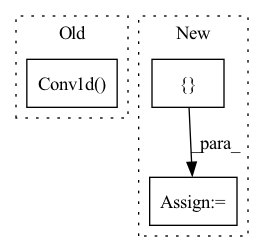

Pattern ID :609
Before Change
nn.Conv1d(1, out_channels_cnn_1, kernel_size, padding="same"),
nn.ReLU(),
pool,
nn.Conv1d(
out_channels_cnn_1, out_channels_cnn_2, kernel_size, padding="same"
) ,
nn.ReLU(),
pool,
]After Change
padding=padding,
)
pool = pool_module(kernel_size=pool_kernel_size)
cnn_layers += [ conv_layer, nn.ReLU(inplace=True), poolIn pattern: SUPERPATTERN
Frequency: 3
Non-data size: 3
Instances Fragment ID: 2249185
Project Name: mackelab/sbi
Commit Name: aeca010c91564a71c6e5a8b7952f479779c1b49e
Time: 2022-11-03
Author: jan.boelts@tum.de
File Name: sbi/neural_nets/embedding_nets.py
M Class Name: CNNEmbedding
N Class Name: CNNEmbedding
M Method Name: __init__(10)
N Method Name: __init__(9)
M Parent Class: nn.Module
N Parent Class: nn.Module
M File Name: sbi/neural_nets/embedding_nets.py
N File Name: sbi/neural_nets/embedding_nets.py
M Start Line: 51
M End Line: 101
N Start Line: 155
N End Line: 220
Before Change
self.padding = self.padding[0]
// Initialization of the parameters
self.conv = nn.Conv1d(
self.in_channels,
self.out_channels,
self.kernel_size[0],
stride=self.stride[0],
dilation=self.dilation[0],
padding=0,
groups=self.groups,
bias=self.bias,
padding_mode=self.padding_mode,
)
// Managing 2d convolutions
if self.conv2d:
After Change
if not isinstance(self.kernel_size, list):
self.kernel_size = [self.kernel_size]
if self.padding is not None and not isinstance(self.padding, list):
self.padding = [ self.padding Fragment ID: 2249168
Project Name: speechbrain/speechbrain
Commit Name: 0ff34ea8f75b108dc69542658d39b70118bf01ca
Time: 2020-03-31
Author: plantinga.peter@gmail.com
File Name: speechbrain/nnet/architectures.py
M Class Name: conv
N Class Name: conv
M Method Name: __init__(12)
N Method Name: __init__(7)
M Parent Class: nn.Module
N Parent Class: nn.Module
M File Name: speechbrain/nnet/architectures.py
N File Name: speechbrain/nnet/architectures.py
M Start Line: 458
M End Line: 611
N Start Line: 387
N End Line: 516
Before Change
)
self.to_v = nn.Sequential(
nn.Conv1d( dim, inner_dim, 1, bias = False) ,
nn.Conv1d(inner_dim, inner_dim, 3, bias = False, groups = inner_dim)
)
After Change
self.qkv_ds_convs = nn.ModuleList([])
for _ in range(3): // for queries, keys, values
ds_convs = nn.ModuleList([] )
for kernel_size in ds_conv_kernel_sizes:
if kernel_size == 0: Fragment ID: 2249191
Project Name: lucidrains/tranception-pytorch
Commit Name: b2eaf893294394093839a66effb621645d54cd6c
Time: 2022-06-12
Author: lucidrains@gmail.com
File Name: tranception_pytorch/tranception_pytorch.py
M Class Name: CausalAttention
N Class Name: CausalAttention
M Method Name: __init__(1)
N Method Name: __init__(1)
M Parent Class: nn.Module
N Parent Class: nn.Module
M File Name: tranception_pytorch/tranception_pytorch.py
N File Name: tranception_pytorch/tranception_pytorch.py
M Start Line: 90
M End Line: 109
N Start Line: 99
N End Line: 127